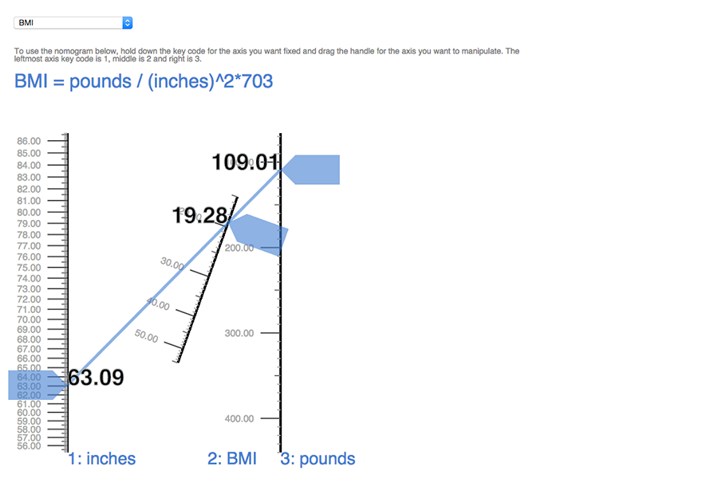

project //
newmograms
occasion/context
university of california, berkeley computer science 294-10: data visualization fall 2013 assignment:
address a concrete visualization problem and propose a novel, creative solution
topic
We aimed to create a visualization tool using d3 that automatically constructs an interactive nomogram from a 3-parameter function. The tool would require user input of a function and the ranges of the variables of interest. Our tool leverages the power of direct manipulation to support kinesthetic nomogram interaction, such as dragging a line, while also using the advantages of a machine (for example, computing the exact values of the third point if it doesn't lie exactly on a tick mark, so that the user need not count tick marks/read by eye). We are also interested in visualizing changes in values between queries to highlight the interplay between variables.

Above is the interactive nomogram we generated for BMI. The input given shows that if a person is 63 inches tall and weighs 109 pounds, his/her BMI is 19.28